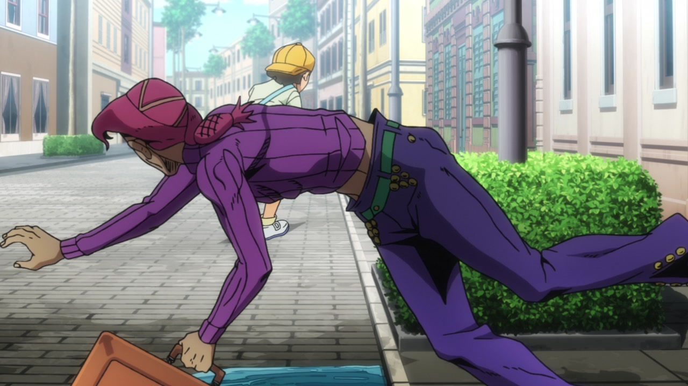
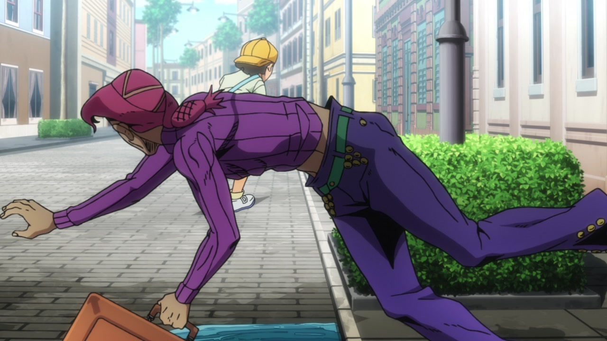

Hello, good friends! Welcome back. You might notice a couple of ads here and there now (or maybe you might not! I’m not entirely sure how this whole gig is going to work) - nothing too intrusive, I hope. I’m still messing around and experimenting with AdSense (a service I never used), so do feel free to let me know how it’s looking! And, of course, give me a shout if you have any complaints or suggestions too. But that’s not what you’re here for today, is it? You’re here for Vento Aureo #26, “A Little Story from the Past - My Name is Doppio”! During an earlier comparison somebody mentioned that they were looking forward to this post and, oh boy, were they right! This is going to be a very long and juicy comparison, so strap in and get ready!
Let’s begin!
- Today’s first differences are here, in this first flashback to Doppio’s past. The two guards have been retouched, the door they’re standing near to is no longer a pitch black pit leading straight to hell, and there is one less shadow on Doppio’s mom’s leg:
- Here, the teeth of the rightmost guard are no longer shaded at the sides:
- And here, the camera has been moved a little to the right, and there’s a new cast shadow under the guard’s right arm:
- Here, the general shading is a little flatter, the faces of the two guards have been retouched and baby Doppio is looking… much better:
- The guy on the left has a smaller mouth, here:
- The background has been moved by a whole lot here, and it’s also looking a little brighter:
- And here, instead, it’s blurrier:
- Doppio’s upper lip has an outline, here:
- This scene is MUCH darker! In addition, the priest’s face has been substantially improved, his cassock is no longer broken under the collar, and the books on the table have been moved slightly:
- Once again, the lighting is much darker here, and the priest’s mouth has been also retouched in some frames:
- In this scene, that Piaggio three-wheeler-looking thing has been retouched:

- And the leftmost window is no longer a slab of solid steel! That surely helps while driving:
- The priest’s expression is different in this scene, and a small bit in the left part of his jawline has been fixed too:
- The foreground has much stronger outlines, here:
- The priest’s face has been fixed once again…:
- Doppio’s mother has white pupils, here (probably to indicate that she’s gone blind?)…:
- …and she moves her mouth more often in the BD version:
- In this last comparison from the flashback part of the episode, the shading on the priest and on Doppio’s mother is slightly different, and some details on the priest have been retouched as well:
- Let’s go back to the present, shall we? This scene is looking much better, in my opinion! There is a new distortion around the edges of the frame, the running kid is significantly smaller, Doppio has been shaded more, and there is a way darker vignette along the bottom of the frame:
 

- This brief scene has better contrast:
- Doppio’s face has been significantly retouched here (in a couple of frames there’s also an additional shadow under his right armpit):
- The fortune teller’s gem has been shaded correctly, here:

- The camera is much more zoomed in here, most things have been moved or resized, and the background is brighter:
- Here there is a different distortion, Doppio has more prominent freckles, the background is brighter and the shading on the characters is a little darker, and towards the end the background becomes blurrier too:
- In this incredibly MENACING shot of Big Boy Doppio, his right shoulder and arm have been retouched, the hair on the left side of the frame is looking slightly better and the little bit of skin showing near his mouth is no longer there:
- The fortune teller’s head has been retouched, here…:
- In the BD version of this scene, he actually notices his bloody stump, and his mouth stays open until the end:
- Here, Doppio has been moved and resized so that his position now actually makes sense, and the fortune teller’s face and arms have been retouched:

- In this beautiful shot, both Doppio and King Crimson have been retouched! Take a look:
- And here, the left part of the frame is much darker…:

- …and while Doppio walks towards the kid, his right arm and leg no longer temporarily go out of the shadows:
- This beautiful man is no longer cross-eyed, here:
- Moving on! The very weird background here has been VASTLY improved! The mountain in the back in particular looks much better, the general lighting is much brighter and the background has also been moved a little bit to the right:
- Here we have another vastly improved shot! Starting from the smaller details: the cat figurine now has a tail, the general lighting inside the car is a little brighter, most lines on the driver and Doppio are a little thinner, the camera has been moved a little… And oh, yeah, the background is looking MASSIVELY better, the side windows are no longer made of solid steel (again), and the back of the car is no longer transparent. Phew! Also, the rightmost window frame was sort of interrupted in the top-right corner; that’s been fixed in the BD:
- Doppio’s been retouched here and there, in these frames:

- Here, the general lighting is darker, Doppio’s now got freckles, most lines on him and on the letter he’s holding are thinner and there’s a couple of lines less next to his right eye:
- We have another completely redrawn background here, fellas - and it’s looking much, much better! In addition, the general lighting has also been fixed. Check it out:
- Let’s take a break with a very minor change - a very small triangle under the douchy driver’s left armpit is now properly shaded:
- Doppio’s eyes are looking slightly better, here:
- This scene is slightly darker, and there are some new spiffy motion lines:
- This… This is one of those differences that would take me much longer to describe than you to actually see with your eyes so here, take a gander at this beautiful shot which has been pretty substantially retouched:
- Here, the shading on the driver and Doppio is a little flatter, the frame is slightly darker in the bottom left corner, the background seems sliiiiiiightly less blurry and the sea is a tiny bit different; in addition, Doppio’s eye colour is different:
- Once again, Doppio’s eyes have been slightly retouched, here:
- This shot is slightly more distorted, the bottom of the rocks in the background is much darker and the sea is slightly different:
- Doppio now has teeth and normal mouth stuff, here:
- The ground at the bottom of the frame is much darker, here, and Doppio has been retouched, to… some effect:
- Here we have another reworked shot! The texture overlay on Doppio is different, the background has been changed and Doppio’s eyes have been retouched too:
- In addition, when he turns to look at Risotto, as you can see, most things are different! Check it out:
- Here, the lighting on Doppio is different, the background is blurrier and he’s now got a smattering of freckles on his weird boy face:
- TAKE A LOOK AT THIS COMPLETELY REDRAWN BACKGROUND, PEOPLE:
- You know what we haven’t had in a while? A frame-by-frame comparison! But, luckily for you, here we have a healthy serving of redrawn Doppio faces, for your eyes only! Eat up, friends, eat up, there are some really tasty morsels in here:

- Woo! Alright, let’s move on… Here, this scene is surrounded by a bunch of new motion lines, and the rocks Doppio’s smashing his face on now have an outline:
- Those very same rocks have had their outlines added here as well; in addition, almost everything apart from Risotto and Doppio has been moved slightly, the general lighting is different and Risotto’s neck has been shaded:
- Here, Doppio’s face has been retouched and the rocks and ground that form the background have thinner, less contrasting lines:
- Here, Risotto walks a little straighter…:
- Risotto is looking MUCH BETTER here, and Doppio’s eye area has been retouched as well:
- Doppio’s eyebrows have been recoloured here, as has the small visible corner of the photograph under his shoe:
- Doppio’s upper lip is bloodied, here:
- The knife and suitcase have been drawn on the ground, here:
- Risotto’s handsome face is even handsomer in this shot:
- Both Doppio and Risotto have been retouched here (quite heavily, in Doppio’s case!):
- Let’s take a look at what the gang is doing, shall we? In this shot, the background has been redrawn (for the better, even though in the first frame one of the clouds in the sky is chopped in half), the camera has been moved slightly, and Aerosmith’s aura no longer extends to the propeller:
- In this iconic Doppio shot, all the scratchy lines on the various razorblades have been recoloured from red to black, and some lines are clearer through the blood:
- This shot now moves around much more, has some additional motion lines on the sides of the frame and Doppio’s hand is now on a different layer from the rest, meaning that it moves at a different speed from the background and makes for a slightly more parallaxed shot:
- Doppio no longer has dummy thicc lipps here:

- Ok, this… This is weird. Doppio’s mouth is looking better, but… Risotto has LESS shading details in his eye area. Why, DPro? That’s a really strange change, in my opinion…:
- Here, the topmost needle has been removed for some reason, and the bottom of Doppio’s eye has been slightly retouched:
- Once again, Risotto’s face has been retouched in… strange ways, here. Doppio’s sweater cuts are also bigger in the last frame:
- Risotto was, once again, retouched here, but this time it was for the better! Check it out:
- Here, the background has been once again retouched, it’s much brighter and Doppio has been very lightly retouched as well:
- Another redrawn background, people! Stuff is also looking a little dimmer:
- And here, the rocks in the background haave been moved and resized, Doppio’s face has been retouched and the razor blades on the ground have been completely redrawn:
Aaand that concludes today’s very lengthy comparison, folks! I really had no idea this episode would have so many things to check - I’m surprised! I’m counting on a pretty short comparison for next time, though - Episode #27 was, in my opinion, the best-animated episode of the whole show, so I really doubt we’ll see many differences!
Once again, I’m now running some ads on this site - I’d appreciate it if you whitelisted the site from AdBlock, but I understand if you don’t, no hard feelings!
Either way, I’ll see you next time for Vento Aureo #27, “King Crimson vs. Metallica”! Bye!